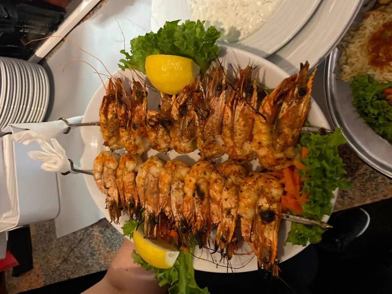
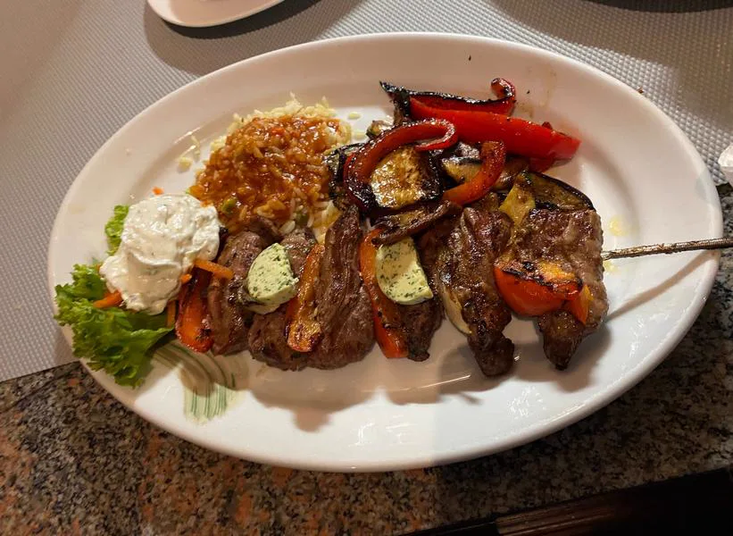
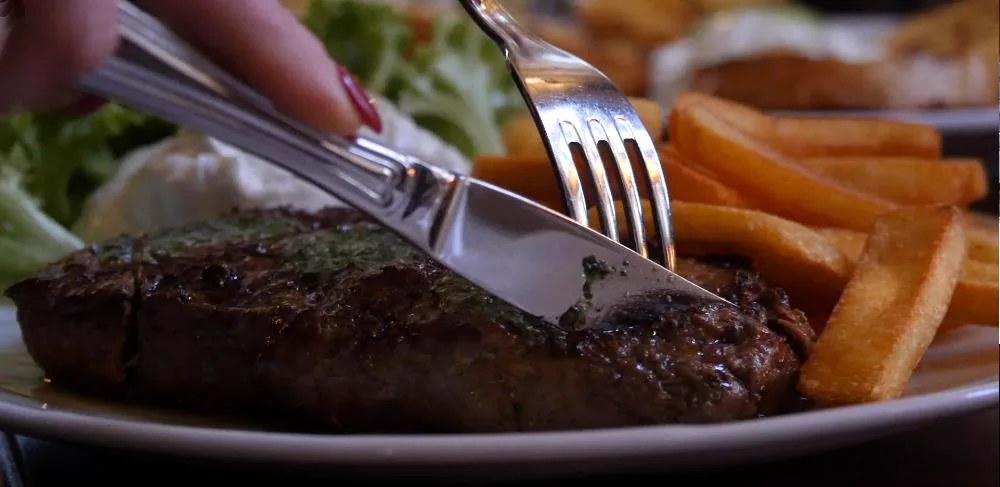
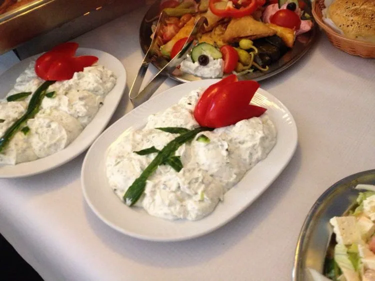
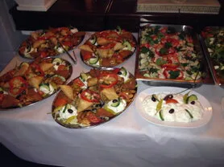
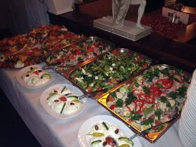
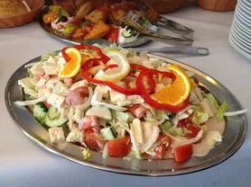
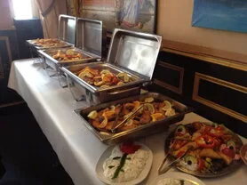

ARTEMIS
Direkt an der Spree seit 1997
Tisch reservierenNur telefonische Reservierungen
Vom Grill auf den Teller
Unsere Küche ehrt die griechische Tradition: frische Zutaten, offenes Feuer, ehrliches Handwerk. Jedes Gericht wird mit Sorgfalt auf dem Holzkohlegrill zubereitet — so schmeckt Griechenland.
Mehr als 80 Gerichte
Von klassischen Souvlaki über frische Meeresfrüchte bis hin zu vegetarischen Köstlichkeiten — unsere Speisekarte bietet für jeden Geschmack das Richtige. Dazu eine preiswerte Mittagskarte und alle Speisen auch zum Mitnehmen.




Direkt an der Spree
Im Frühling, Sommer und Herbst erwartet Sie unsere Außenterrasse mit Blick auf den vorbeiziehenden Schiffsverkehr. Genießen Sie griechische Küche unter freiem Himmel — ein Stück Griechenland mitten in Berlin-Niederschöneweide.

Wir freuen uns, Sie begrüßen zu dürfen
Im Artemis ist jeder Abend ein kleines Fest. Zu Ihrem Essen servieren wir eiskalten Ouzo, ausgewählte griechische Weine aus Makedonien und dem Peloponnes sowie hausgemachte Limonaden. Ob ein kräftiger Agiorgitiko zum Lammkotelett oder ein frischer Assyrtiko zur Dorade — unsere Getränkekarte ergänzt jedes Gericht perfekt.
Das Artemis ist ein Ort für die ganze Familie. Kinder sind bei uns herzlich willkommen und auch Ihr Vierbeiner darf mit — wir sind hundefreundlich. Was 1997 als Familientradition begann, lebt heute in zweiter Generation weiter: griechische Philoxenia, Gastfreundschaft von Herzen, direkt an der Spree.
„Bestes griechisches Restaurant in Berlin! Die Lammkoteletts vom Grill sind unglaublich und die Terrasse an der Spree ist im Sommer ein Traum."
„Seit Jahren unser Lieblingsgrieche. Frische Zutaten, riesige Portionen und das freundlichste Personal in ganz Schöneweide. Immer wieder gerne!"
„Unvergesslicher Abend auf der Terrasse direkt an der Spree. Das Essen war hervorragend, besonders die Meeresfrüchte-Platte. Absolute Empfehlung!"
Die Göttin Artemis
Artemis — griechische Göttin der Jagd und der Natur. Ihr Name steht für die Verbindung zwischen Mensch und Erde, zwischen Feuer und Genuss. Wie die Göttin selbst bringen wir ein Stück unberührtes Griechenland nach Berlin: ehrliche Zutaten, offene Flamme, mediterrane Gastfreundschaft direkt an der Spree.
Feiern Sie bei uns
Sie suchen eine besondere Location mit gemütlichem Ambiente direkt an der Spree? Ob Firmenfeier, Weihnachtsfeier, Geburtstag, Hochzeit oder einfach Ihre Party — wir stellen uns perfekt auf Ihren Anlass ein.
Rufen Sie uns an — wir beraten Sie gerne.
Nur telefonische Reservierungen.




Öffnungszeiten & Kontakt
Di. – So.: 12:00 – 23:00 Uhr
Montag Ruhetag
Schnellerstr. 97
12439 Berlin
Tel.: 030 67822870
Nur telefonische Reservierungen